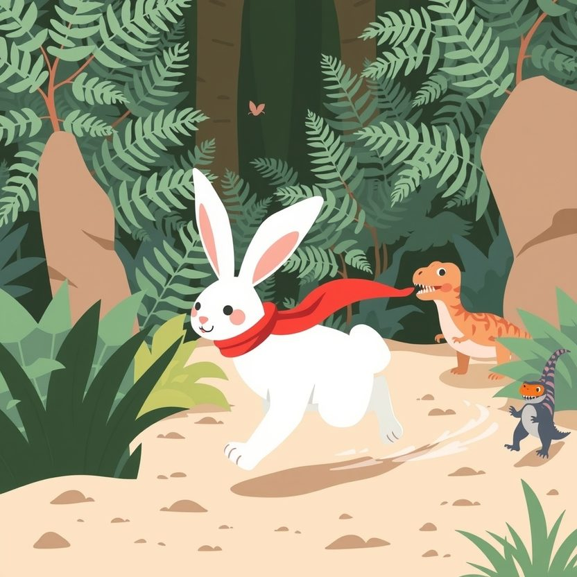

Titistoire › Les Étoiles (3-6 ans)
Rosie et les fleurs de lune
Une histoire de Rosie la lapine pour parler de : ralentir.

▶ Écouter et regarder l'histoire
Gratuit, sans inscription : la voix lit, le texte suit mot à mot, les images tournent comme dans un album.
Le texte de l'histoire
Dans la vallée des Fougères, Rosie fait tout en courant. Elle mange en courant, elle dit bonjour en courant, et il paraît même qu'elle dort en courant. Derrière elle, il ne reste qu'un petit nuage de poussière.
Ce matin, grande nouvelle : tout en haut de la colline Bleue, les fleurs de lune vont s'ouvrir. Elles n'éclosent qu'une seule fois par an, juste au coucher du soleil.
« J'y serai la première ! Un, deux, trois… » « Minute, papillon ! l'arrête sa maman. Tu y vas avec Mamie Dipla. Elle connaît le chemin. » Les oreilles de Rosie retombent. « Oh non… Pas Mamie Dipla ! »
Mamie Dipla est la plus vieille diplodocus de la vallée, haute comme une colline. Elle est très gentille. Et elle est très, très, très lente.
Elle lève une patte… elle la repose… elle lève l'autre patte… Pendant ce temps-là, Rosie a déjà galopé douze fois autour d'un arbre, et elle en a le tournis.
« Plus vite, Mamie Dipla ! On va tout rater ! » « Hé hé… Chaque chose en son temps, ma puce. Oh, regarde ce scarabée, comme il reluit ! » Bras croisés, Rosie tape du pied. Elle ne regarde pas.
Au bout d'une heure, Rosie n'y tient plus. Justement, le sentier se sépare en deux. « Je prends le raccourci ! lance-t-elle en agitant la patte. On se retrouve là-haut ! »
« Rosie, attends ! Ce chemin-là… » Mais Rosie est déjà loin. Zoum ! Les oreilles couchées, elle détale si vite que les fougères n'ont pas le temps de la voir passer.
Elle saute une flaque. Hop ! Deux flaques. Hop ! Puis une troisième, plus large, plus brune, plus luisante. Et celle-là… elle ne la saute pas assez loin.
SPLOTCH ! Voilà Rosie dans la boue jusqu'au ventre. C'est le marais Collant, et il porte bien son nom. Elle tire sur une patte : ça colle. Sur l'autre : ça colle encore plus.
« Un, deux, trois… partez ! » Elle se débat, elle gigote, elle pédale, elle éclabousse les grenouilles. Mais plus elle se dépêche, plus elle s'enfonce.
Là-bas, le soleil commence à glisser derrière la colline. Les fleurs de lune vont s'ouvrir sans elle. Et Rosie, la plus rapide de toute la vallée, ne peut plus bouger d'un poil.
Boum… Boum… Un pas tranquille fait trembler les fougères. Puis un long, long cou se penche au-dessus du marais, avec, tout au bout, deux petites lunettes qui brillent.
« Te voilà, ma puce. » Mamie Dipla ne dit pas « je te l'avais dit ». Elle abaisse sa grosse tête, tout doucement, jusqu'aux pattes de Rosie. « Accroche-toi. Et ne gigote pas. »
Rosie s'agrippe. Mamie Dipla la soulève, lentement, lentement. La boue fait slurp, puis plop. Et Rosie se retrouve juchée tout là-haut, dégoulinante, sur le dos le plus haut du monde.
« Maintenant, on y va à mon pas », annonce Mamie Dipla. Rosie pousse un gros soupir. Mais elle est bien trop fatiguée pour courir. Alors, pour une fois, elle regarde.
Elle voit une libellule sécher ses ailes au soleil. Plus loin, la rivière serpente, tout en boucles, comme un ruban. Et quand Mamie froisse la menthe sous ses pattes, Rosie ferme les yeux pour mieux la respirer.
« C'était déjà là avant, tout ça ? » s'étonne Rosie, à plat ventre sur le long cou. « Depuis toujours, ma puce. Mais ça ne se voit pas en courant. »
Le soleil frôle déjà la colline quand elles arrivent au sommet. Rosie se hisse sur la pointe des pattes, le cœur battant. « On est en retard ? On a tout raté ? »
« Chut, souffle Mamie Dipla. Assieds-toi là. Maintenant, il va falloir faire la chose la plus difficile du monde. » « Courir ? » « Non, ma puce. Attendre. »
Rosie s'assoit. Ses pattes fourmillent, la démangent. Elle ferme les yeux et compte dans sa tête : un… deux… trois… Et elle ne part pas.
Alors, une par une, sans se presser, les fleurs de lune déplient leurs pétales. Elles sont blanches, elles sont bleues, elles luisent dans le soir comme si chacune avait avalé une petite étoile.
Rosie ne remue pas une moustache. Pas un mot. Elle regarde jusqu'à la toute dernière fleur, qui s'ouvre juste devant son nez. C'est long. C'est merveilleux.
Pour rentrer, sous les étoiles, elle marche à côté de Mamie Dipla. Une patte… puis l'autre… « Tu ne cours pas, ma puce ? » « Pas ce soir, murmure Rosie. Ce soir, j'ai pas envie d'arriver. »